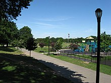
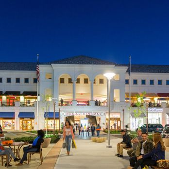
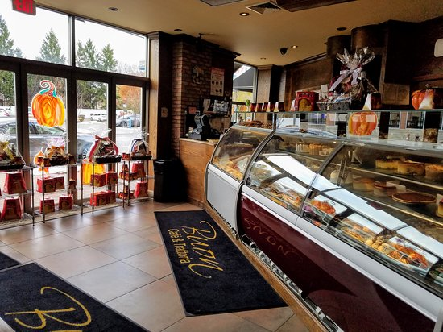
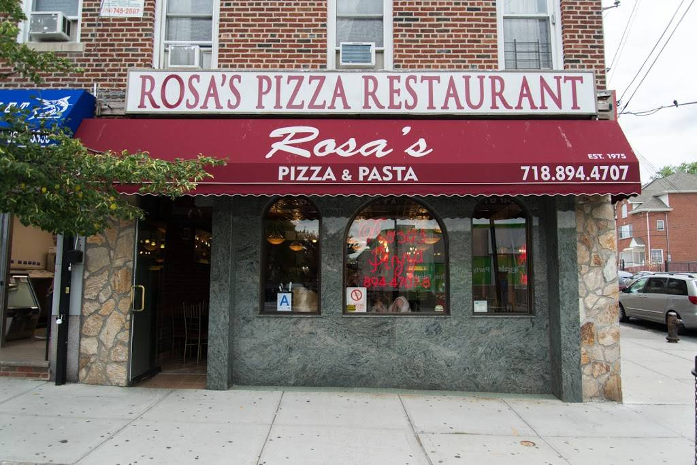

Juniper Valley park is a huge public park that is a staple loaction for anyone in the area. The large fields allow activities for people of all ages. The 2 seperate playgrounds give children ample obstacles to run through. The park consists of multiple basketball courts, handball walls, a track, a football/soccer field, baseball fields, and many benches for people to relax and enjoy the view. Kids of all ages would roll down the large hill and would be excited to sled down it when winter came. Everyone has deep memories of this park, it's the heart of Middle Village.

Atlas Park Mall is the go to hangout spot for many teens in the area. They can shop at Forever 21, TJ Max, footlocker, 5-below, or ulta beauty; grab some starbucks, Chilis, subway, Auntie Annes, or frozen Yogurt. Others can watch teh newest movie at Regal, go to the Laser Bounce arcade downstairs, or even just hang out on the large turf field outside. People can spend hours here just with friends or just quickly run some errands.

Buon is the famous Italian resturant and bakery that all have visted at least once in their time in Middle Village. The staff are all extremely friendly and treat you as family.

Rosas is one of the most popular pizzeria in the area. Kids often stop by and grab a bite as a after school snack. Others often order delievery from this place as a worthy substitue from a homecooked meal or just a late sleepover food. The employees are extremely friendly and would often give a free garlic knots to the little kids that stop by just to try.